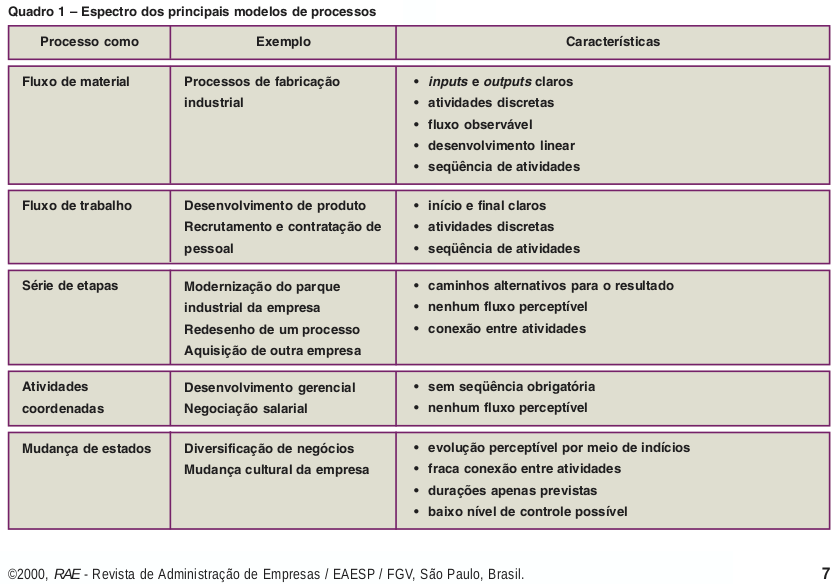
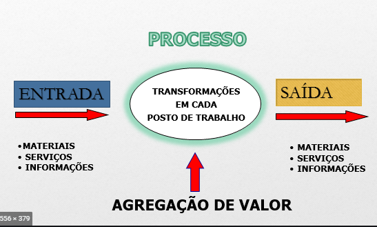
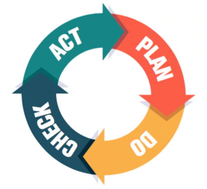
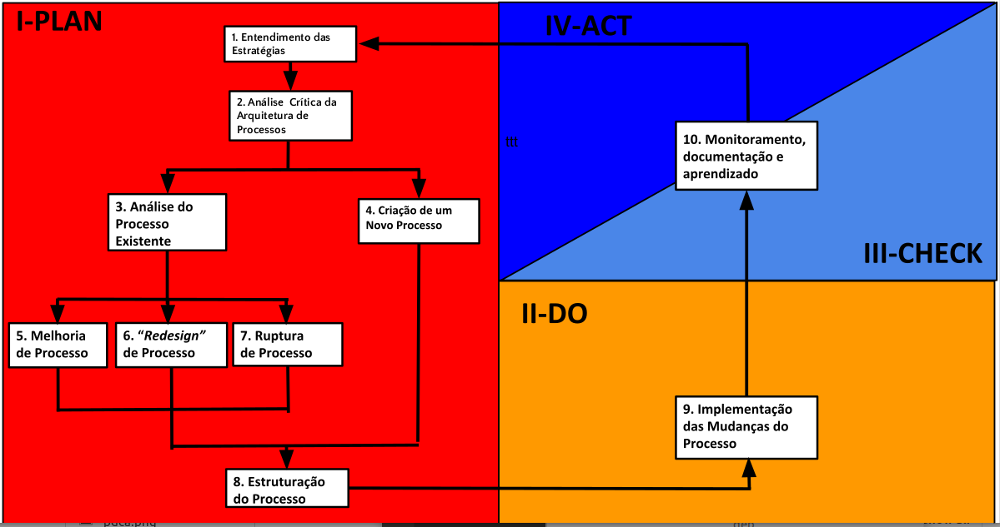

Um processo é qualquer grupo de atividades, realizados em uma sequência lógica, que toma inputs e retorna inputs que agregam valor.
Muitos processos não possuem seu fluxo, começo ou fim bem definidos.
▪ Processo é qualquer atividade ou conjunto de atividades que toma um input, adiciona valor a ele e fornece um output a um cliente específico (Gonçalves, 2000)
▪ Mais formalmente, um processo é um grupo de atividades realizadas numa seqüência lógica com o objetivo de produzir um bem ou um serviço que tem valor para um grupo específico de clientes (Hammer e Champy, 1994).
▪ A idéia de processo como um fluxo de trabalho com inputs e outputs claramente definidos e tarefas discretas que seguem uma seqüência e que dependem mas das outras numa sucessão clara vem da tradição da engenharia. Os inputs podem ser materiais equipamentos e outros bens tangíveis, mas tambémpodem ser informações e conhecimento. Nessa visão,os processos também têm início e final bem determinados. Essa abordagem, característica dos adeptos do aperfeiçoamento de processos, acompanhou o raciocínio da engenharia industrial.(Harrington, 1991)
▪ O fluxo de trabalho é apenas um dos tipos de processo empresarial, talvez aquele em queas atividades são mais interdependentes e realizadas numa seqüência específica. Essa definição estrita deixa de fora processos que não têm início e fim claros ou cujo fluxo não é bem definido. Às vezes, alguns desses processos têm impacto maior que os demais na própria viabilidade da empresa, como aqueles ligados à sucessão na empresa, ao desenvolvimento dosgerentes e à avaliação do desempenho do pessoal.(Quadro 1) (Gonçalves, 2000)
 ▪ O futuro vai pertencer às empresas que conseguirem explorar o potencial da centralização das prioridades, as ações e os recursos nos seus processos. As empresas do futuro deixarão de enxergar processo apenas na área industrial, serão organizadas em torno de seus processos não fabris essenciais e centrarão seus esforços em seus clientes (Gonçalves,1997)
▪ Parte do sucesso que as empresas japonesas tiveram com relação às suas concorrentes americanas nas décadas de 80 e 90 decorreu do fato de terem as empresas japonesas descoberto (ou pelo menos implementado) o gerenciamento de processos (Davenport,1994)
▪ Os processos são a fonte das competências “específicas da empresa” que fazem a diferença em termos de concorrência, além da influência que podem ter a estratégia, os produtos, a estrutura e a indústria (Keen, 1997)
▪ Os processos não criam apenas as eficiências de hoje, mas também garantem o futuro por meio de habilidades que se aplicam aos novos produtos. A rápida inovação dos processos pode resultar em capacitações organizacionais melhoradas (Kanter, 1997)
Conjunto de atividades individuais ou colaborativas que visam a obtenção de um certo resultado dentro de um período determiado de tempo e dentro de certas limitações.
▪ Uma iniciativa individual ou colaborativa que é cuidadosamente planejada com o intuito de alcançar um objetivo particular. (Oxford, 2016)
▪ Conjunto planejado de ações a serem executadas sobre um periodo de tempo determinado e dentro de um certo custo e outras limitações.(Bussines Dictonary, 2018)
▪ Esforço temporário com começo e fim que deve ser usado para criar um único produto, serviço ou resultado. (Harvard, 2004)
▪ Um projeto é uma atividade que visa a criação de um produto ou serviço único, portanto atividades rotineiras não podem ser consideradas como projetos. (Management study guide)
• Entender valores e objetivos da companhia
• Identificar, definir e entender os problemas a serem resolvidos
• Definir Plano de ação
• Definir metas e indicadores
• Execução e implementação das ações estabelecidas no plano de ação
• Medir resultados das metas e indicadores
• Avaliar e refletir sobre os resultados obtidos
• Documentar resultados obtidos
• Definir mudanças a serem feitas
 O Scrum possui atividades e artefatos a serem seguidos de forma a tratar o projeto da maneira mais eficiente. Essas atividades e artefatos são:
Product backlog: É uma lista de funcionalidades do seu projeto, organizada de forma a dar prioridade às funcionalidades essenciais. Sugere-se dividir as funcionalidade em três categoria: Essensêciais, importantes, seria bom ter.
Sprints: No Scrum os trabalhos são realizados em sprints. Sprinsts são Timeboxes, períodos de duração fixa, com no máximo um mês de duração, em que deve-se definir objetivos e metas para cada sprint baseando-se nas funcionalidades do projeto definidas no Product backlog.
• Sprint planning: Planejamento e definição das ações a serem realizadas no sprint atual. O sprint planning deve sempre ser baseado no product backlog.
• Sprint Backlog:Lista dos trabalhos a serem realizados no sprint atual.
Daily Scrum: Reunião diária com o objetivo de alinhar o time nas ações dos sprints e responder as seguintes perguntas: O que eu fiz ontem que ajudou o time a atingir a meta do sprint? O que eu farei hoje para ajudar o time a atingir a meta do sprint? Há algum impedimento que não perimta a mim ou ao time a atingir a meta do sprint?
• O que é 5S – origem, contextualização, definição (base para demais ferramentas) e importância (falar do aspecto de segurança, qualidade, pessoal, empresa, segurança, processos (na rede))
• Quando aplicar – como sei que implemento 5S?
• Como implementar – passo a passo – inserir explicação sobre 5T’s
• Programa 5S Oxiteno
• Benefícios de implementação
• Case de Sucesso Oxiteno – Resumo
LINK PARA UMA PÁGINA COM O ESTÁTUTO• O que é Kaizen – origem, contextualização, definição e importância
• Quando aplicar – como sei que implemento Kaizen?
• Passo a passo condução projeto Kaizen
• Benefícios de implementação
• Case de Sucesso Oxiteno – Resumo
Clique aqui para conhecer mais• O que é Lean – origem, contextualização, definição e importância
• Quando aplicar – como sei que implemento Lean?
• Passo a passo condução projeto Lean – ver material treinamento DNA
• Benefícios de implementação
• Case de Sucesso Oxiteno – Resumo
Clique aqui para conhecer mais• O que é Six Sigma – origem, contextualização, definição e importância
• Quando aplicar – como sei que implemento Six Sigma?
• Passo a passo condução projeto Six Sigma
• Benefícios de implementação
• Case de Sucesso Oxiteno – Resumo
Clique aqui para conhecer mais• O que é Deign for Six Sigma – origem, contextualização, definição e importância
• Quando aplicar – como sei que implemento Design for Six Sigma?
• Passo a passo condução projeto Design for Six Sigma
• Benefícios de implementação
• Case de Sucesso Oxiteno – Resumo
Clique aqui para conhecer mais